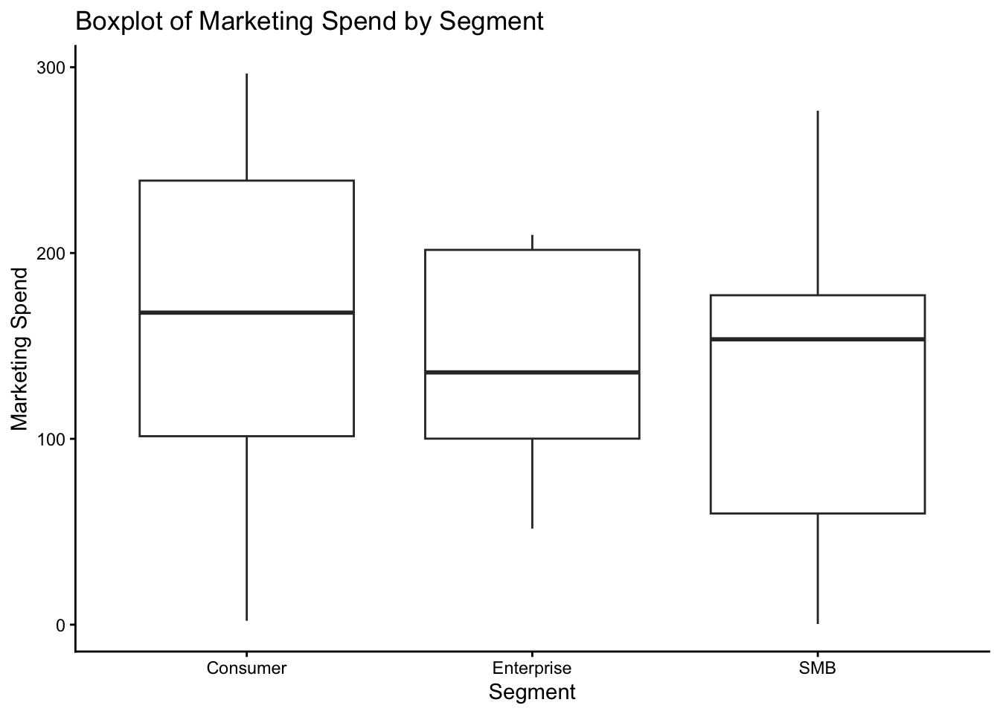
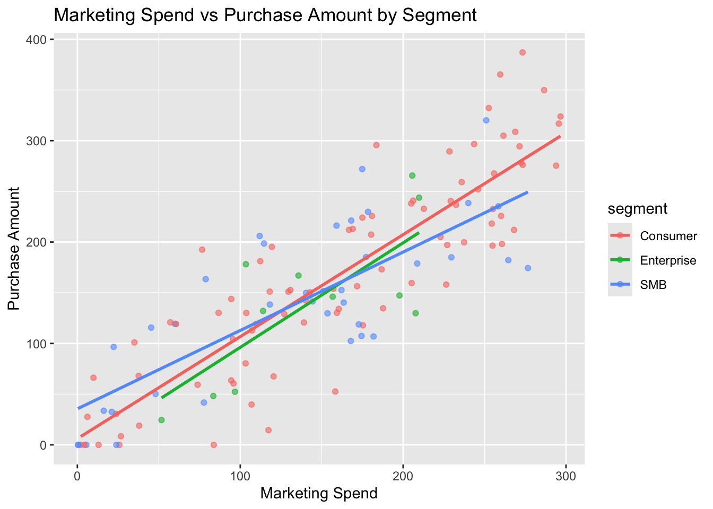

| Segment | Count | Mean Marketing Spend | Mean Purchase Amount |
|---|---|---|---|
| Consumer | 84 | 162.56 | 169.68 |
| Enterprise | 11 | 142.06 | 139.53 |
| SMB | 37 | 133.59 | 138.80 |
Assignment 1
Introduction
We at OnlineRetailer recently ran a marketing campaign and tracked a number of key metrics for investigation into the roles they play within sales. In this report, I will visualise the relationship between marketing spend and the purchase amount, to establish whether a correlation exists between the two variables. As the customers are of different segments, I will also explore whether the correlation varies across different customer segments (to control for segment variables). This analysis will provide insights into whether there is a link between marketing spend and purchase amount, whether this is stronger for certain customer segments, and whether this should be taken into account when planning future marketing campaigns.
Research Question
As the conclusion of interest for this report is the impact of marketing spend on purchase outcomes, the questions that will be investigated are: Does a higher marketing spend correlate with a higher purchase amount? Does this correlation vary across different customer segments?
Dataset Introduction
The overall dataset used in this analysis contains seven variables: customer_id, signup_date, marketing_spend, visits, purchase_amount, segment and notes, which were all tracked across the duration of the recent marketing campaign.
Of particular interest for this investigation are the marketing_spend and purchase_amount variables, as they will allow us to explore the relationship between marketing spend and purchase amount, which is the main aim of this report. The segment variable will also be important for controlling for customer segmentation in our analysis.
The data will be cleaned by filtering out any missing values across the analysed columns, and then subsetting the data to only include the relevant variables for this analysis.
Dataset Description
For the sake of the analysis, we are using 3 variables, with 132 clean observations across 3 observed customer segments. As stated above, the analysed variables are marketing_spend, purchase_amount and segment.
The marketing_spend is a continuous variable that represents the amount of money spent on marketing for each customer. The purchase_amount is also a continuous variable that represents the amount of money spent by each customer on purchases. The segment variable is a categorical variable that represents the different customer segments, and can take the values “Consumer”, “SMB” and “Enterprise”.
Table 1 shows that the “Consumer” segment has the highest mean marketing spend and purchase amount, followed by the “Enterprise” segment, and then the “SMB” segment. This suggests that there may be differences in marketing spend and purchase amount across different customer segments, which will be further explored in the analysis.

Figure 1 shows that the median marketing spend is much closer between the three segments, than the means shown in Table 1. This suggests that there may be some outliers in the “Consumer” segment that are driving up the mean marketing spend for that segment, but these are beyond the scope of this analysis. Figure 1 also shows that the “Enterprise” segment has the smallest range and variability of the three segments.
Results
To explore the relationship between marketing spend and purchase amount, I first created colour-segmented scatterplots of the two variables.

Figure 2 reveals a positive linear association between marketing spend and purchase amount across both segments. The fitted regression lines suggest that, on average, higher marketing expenditure is associated with increased purchase values. However, there is noticeable variability, particularly at higher spending levels, indicating heterogeneity in customer responses.
To further explore this overall relationship, I calculated the correlation coefficient for each segment.
| Segment | Correlation |
|---|---|
| Consumer | 0.87 |
| Enterprise | 0.77 |
| SMB | 0.79 |
Table of correlation coefficients between marketing spend and purchase amount by segment
Table 2 shows that the correlation coefficient between marketing spend and purchase amount is highest for the “Consumer” segment (0.87), followed by the “SMB” segment (0.79) and then the “Enterprise” segment (0.77).
Cumulatively, these results suggest that there is a positive correlation between marketing spend and purchase amount across all segments, with the strongest correlation observed in the “Consumer” segment. This indicates that higher marketing spend is associated with higher purchase amounts, particularly for consumers.
While this investigation is purely correlational and does not establish causation, it provides valuable insights into the relationship between marketing spend and purchase amount, and how this relationship varies across different customer segments. Future analyses could explore potential causal mechanisms or measure the sensitivity of each segment more thoroughly.